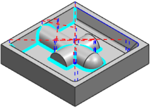

创建清根工序
清根参考刀具工序是在前一个工序之后用于移除残留材料的工序。
-
点击插入工具条上的创建工序
 。
。将打开创建工序对话框。
-
在类型组的列表中，选择 DieMold_Exp，如果不能使用 DieMold_Exp，也可以使用 mill_contour。
-
在工序子类型组中，点击清根参考刀具
 。
。 -
在位置组中，指定如下参数：
-
程序 = 1234
-
刀具 = EM-.2_1(铣刀—5 参数)
-
几何体 = MILL_AREA
-
方法 = MILL_FINISH
前一个工序使用的是 EM-.5_.25端铣刀，它对于部件中的某些拐角和圆角来说太大，您现在将使用 EM-.2_1端铣刀来移除剩余的材料。
-
-
点击确定。
将打开清根参考刀具对话框。
-
在驱动方法组的方法行中，点击编辑
 。
。将打开清根驱动方法对话框。
-
在参考刀具组的参考刀具列表中，选择 EM_.5_.25。
参考刀具是在上一个工序中使用的刀具，系统将使用指定的参考刀具直径计算双切点，然后使用这些点来定义精加工工序的切削区域。
-
点击确定。
将打开清根参考刀具对话框。
-
点击操作组中的生成
 。
。注意工序如何使用多个刀路精加工凹陷拐角、凹部以及圆角。
